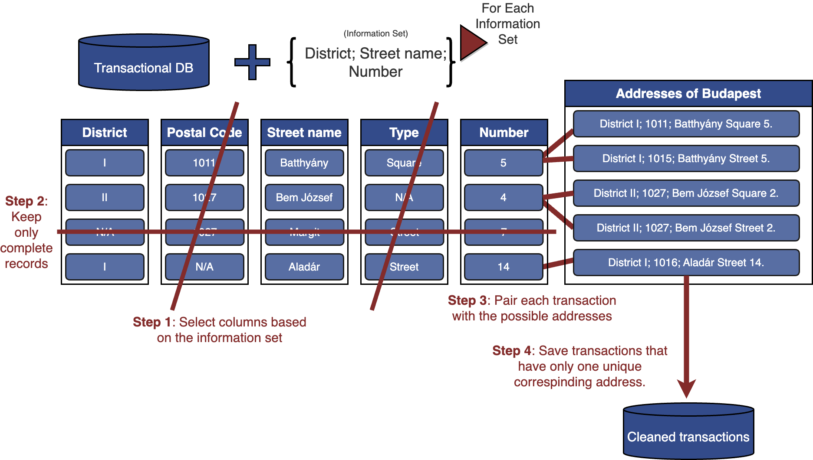
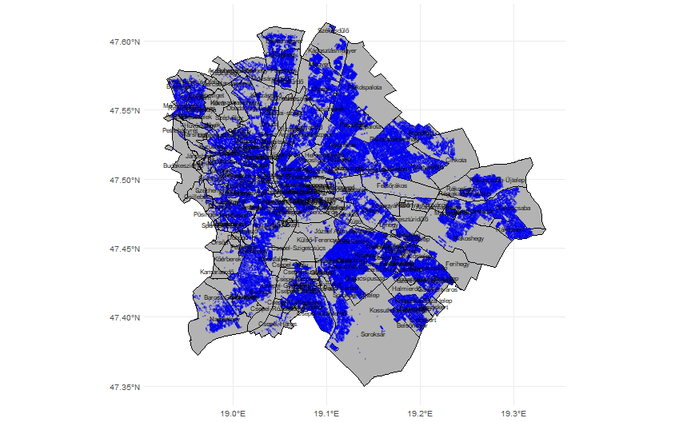
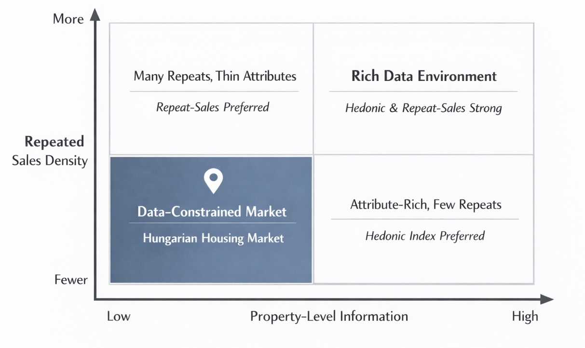
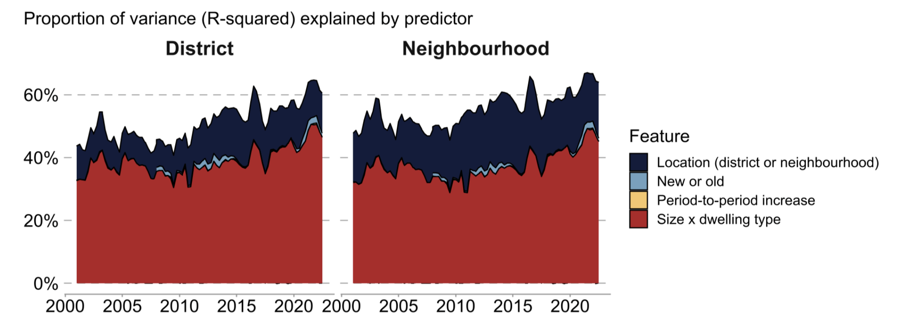
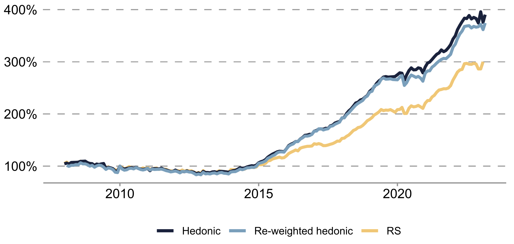

- 1
-
always_usekeepsstreet_name+housenrso each information set works for both house‑level (withhousenr) and street‑level (whenhousenris missing) matching. - 2
-
We do not add a
{district, zip_code}combo because the district is implied by the zip code in Hungary.
Clean the Whole House
Address Reconstruction and Spatial Matching
Marcell P. Granat
2026-02-19
Marcell P. Granat

National Bank of Hungary · European Central Bank · Eötvös Loránd University
Disclaimer: The views expressed in this presentation are solely those of the author and do not necessarily represent the views of the National Bank of Hungary or the European Central Bank.
1. Introduction
Why the Hungarian housing market is an important case
- Exceptionally strong house price growth over the past two decades, significantly outpacing the EU average and ranking among the highest in Europe
- Active policy interventions:
- 3% housing loan cap (from 2025) and the corvin district renewal (from 2005).
- The Corvin intervention illustrates a clear gentrification effect after large-scale redevelopment.
- Capturing this effect over time was an original motivation of the project, which required clean historical transaction data for Budapest.
Corvin area

2. Data
Data sources
- Transaction tax database (NAV): manually recorded addresses
- Official address registry: zip code, street names, types, house numbers
- Scope: Budapest transactions from the 2000s (N = 959,942; 2001-2023)
Last week, I had to register my permanent residence at the city office of Frankfurt.
Me: It’s a living hotel, and it’s address is XXX street, 141–145.
Operator: The system only accepts one number for the address. So which one should it be?
Me: The middle one???
Harmonization and missing fields
Warning
Fields and formats changed over time, so we harmonize before matching.
Example: some records store the full address in one text cell, others split it across postal code, street name, street type, house number, etc. Some fields (e.g. PIN) appear in multiple columns.
Example typo: Batthány Lajos u. (recorded) vs Batthyány Lajos utca (official).
Field completeness (missing rate)
| Field | Missing rate |
|---|---|
| Postal code | 66.78% |
| Public space name | 66.77% |
| Address (free text) | 33.22% |
| Cleaned address | 35.31% |
| Public space type | 66.71% |
| PIN number | 56.09% |
Other data issues
- Incomplete keys: postal code or district missing; we infer district from postal code when possible
- Current registry only (2023): renamings limit full match rates
- Ambiguous street names: same name with different type (e.g., Batthyány tér vs Batthyány utca)
- Inconsistent entry: public space type missing or unrecoverable from free text
- Baseline linkage: only ~50% of transactions have an identified address before cleaning
Typo patterns in addresses
- Most discrepancies are in street names, not in house numbers or districts
- Historical name spellings (e.g., th, y, Germanic/Slavic forms) create frequent typos
- First names are often missing or abbreviated, so we prioritize unique surname words
3. Pipeline
Information sets (matching keys)
Information sets
Deterministic matching (high-confidence rules)
- Standardize structure (split / normalize fields)
- Use multiple information sets:
- {street name, type, district, house number}
- {street name, type, postal code, house number}
- {street name, type, house number}
- Keep only unique candidate matches
String-distance correction (fuzzy step)
- Fix typos in street names using Optimal String Alignment
- Replace unmatched words with closest valid street-name word
- Conservative similarity threshold (~70%)

String-distance example: “Bajcsy-Zsilinszky”
Manual entry yields many variants of the same street name.
| Recorded string | Similarity |
|---|---|
| Bajcsy-Zsilinszky u. | 1.00 |
| Bajcsy Zsilinszky u | 0.97 |
| Bajcsi-Zsilinszki u | 0.92 |
| Bajcsy-Zsilinszky ut | 0.98 |
| Bajcsy-Zsilinszky utca | 0.99 |
| Bajcsy-Zsilinsky u. | 0.90 |
PIN-based propagation
- Use property identifiers (PIN) to propagate location once matched
- Exact PIN match: if the same PIN appears elsewhere, inherit the full address
- PIN prefix inference: when street is known but district is ambiguous, use the leading digits of PINs to infer the most plausible district
PIN-based propagation
pin_first_digits <- pin_numbers |>
transmute(transaction_id, pin_digits = str_sub(pin_number, end = 3))
nonunique_pairs |>
inner_join(pin_first_digits, by = "transaction_id") |>
left_join(collect(mls_target()), by = "mls_id") |>
inner_join(pins_by_street, by = join_by(pin_digits, street_name, street_type, zip_code)) |>
arrange(desc(n)) |>
group_by(transaction_id) |>
1 filter(
2 n == max(n),
3 (first(n) - nth(n, 2, default = 0)) / sum(n) > .1
) |>
ungroup() |>
distinct(transaction_id, mls_id)- 1
- Filter rows to enforce a single PIN‑prefix choice per transaction.
- 2
- Keep only the max‑count prefix for that transaction.
- 3
- Require a dominance gap of >10% over the next‑best prefix.
4. Results
What improves after cleaning
- Automatic linkage ~93% overall
- 83% property-level matches, 10% street-level, ~7% remain unmatched
- House number available in ~89% of transactions
Property-level linkages: Simple rules
| Information set | N | P |
|---|---|---|
| District, Street name | 1,391 | 0.14% |
| District, Street type, Street name | 27,712 | 2.89% |
| Street name | 96,763 | 10.08% |
| Street type, Street name | 3,439 | 0.36% |
| Zip, Street name | 11,212 | 1.17% |
| Zip, Street type, Street name | 484,629 | 50.49% |
Property-level linkages: Fuzzy strings
| Information set | N | P |
|---|---|---|
| District, Street name | 252 | 0.03% |
| District, Street type, Street name | 1,830 | 0.19% |
| Street name | 58,888 | 6.13% |
| Street type, Street name | 1,738 | 0.18% |
| Zip, Street name | 1,959 | 0.20% |
| Zip, Street type, Street name | 30,007 | 3.13% |
Property-level linkages: PIN-based
| Information set | N | P |
|---|---|---|
| Exact PIN | 10,650 | 1.11% |
| Street from PIN | 70,253 | 7.32% |
Street-level linkages: Simple rules
| Information set | N | P |
|---|---|---|
| District, Street name | 31,197 | 3.25% |
| District, Street type, Street name | 1,332 | 0.14% |
| Street name | 782 | 0.08% |
| Street type, Street name | 344 | 0.04% |
| Zip, Street name | 1,085 | 0.11% |
| Zip, Street type, Street name | 16,510 | 1.72% |
Street-level linkages: Fuzzy strings
| Information set | N | P |
|---|---|---|
| District, Street name | 14,323 | 1.49% |
| District, Street type, Street name | 144 | 0.02% |
| Street name | 1,867 | 0.19% |
| Street type, Street name | 196 | 0.02% |
| Zip, Street name | 180 | 0.02% |
| Zip, Street type, Street name | 1,287 | 0.13% |
Street-level linkages: PIN-based
| Information set | N | P |
|---|---|---|
| Exact PIN | 28,408 | 2.96% |
| Street from PIN | 592 | 0.06% |
Quality checks
- Compared outcomes across information sets to flag inconsistencies
- In rare cases, two information sets implied different matches
- When district conflicted with street type (most frequent case), we prioritized the district number
Example for district-street type conflict
DuckDB performance in the pipeline
DuckDB benchmark example
bench::mark(median_price = {
tbl(transaction_con, "transactions") |> # * connect
group_by(adev, adho, district) |>
summarise(med_price = median(ar / lat)) |> # * aggregate
1 collect()
})
#> # A tibble: 1 × 5
#> min median `itr/sec` mem_alloc `gc/sec`
#> <bch:tm> <bch:tm> <dbl> <bch:byt> <dbl>
#> 60.1ms 65.4ms 15.0 10.2MB 15.0- 1
-
collect()materializes the lazy DuckDB query result into R only at the end.
| Min | Median | itr/sec | mem_alloc | gc/sec |
|---|---|---|---|---|
| 60.1ms | 65.4ms | 15.0 | 10.2MB | 15.0 |
Spatial distribution
5. Index creation
Choosing the Right Index
Official baseline: Adjacent-period hedonic index
- Official benchmark: adjacent-period hedonic OLS (Banai et al., 2017 style (Banai, Vágó, and Winkler 2017)).
- Outcome and index step: \(\log(\text{price})\) with period-pair dummy \(\text{growth}\).
- Main regressors: \(\log(\text{size})\), \(\log(\text{size})^2\), \(\text{district}\); after 2008 also \(\text{dwelling type} \times \log(\text{size})\), \(\text{dwelling type} \times \log(\text{size})^2\), and \(\text{new}\) (dummy).
Spatial effects dominate price variation
Spatial effects dominate price variation
- In Budapest, a large share of price variance is locational.
- District controls capture broad differences, but miss street/block-level amenities.
- Nearby properties share unobserved factors: micro-accessibility, school catchments, street quality, prestige effects.
- If spatial heterogeneity is under-modeled, index changes can mix true price dynamics with composition shifts.
Limits of classic repeat-sales (Winkler 2021)
- Repeated-sales transactions are not representative of total turnover: Budapest and multi-apartment units are overrepresented.
- Within Budapest multi-apartment stock, repeated-sales units are skewed toward smaller dwellings.
- Effective coverage is limited (about 15.4% linked repeated sales), which weakens estimation for small segments and higher-frequency indices.
- The constant-quality assumption is fragile between sales (renovation and depreciation both matter).
- RS indices are typically more volatile and require continuous revisions as new pairs arrive.
Why ps-RS is a strong next step
- ps-RS combines key strengths of both methods: RS-style differencing plus a small hybrid hedonic correction.
- It mitigates hedonic omitted-variable bias by differencing out shared local/context attributes within matched pairs.
- It avoids classic RS data scarcity by generating many more pseudo-pairs than same-property repeats.
- It reduces classic RS sample-selection bias by using a much broader transaction base.
- ps-RS can deliver lower volatility/noise than comparable hedonic benchmarks. Reference: (Guo et al. 2014).
Our ps-RS design: block-based matching
- We adapt ps-RS to Budapest by defining similarity at the street-block level (basis: Zhang, Song, and Chen (2025)).
- Each pair uses sales that are not separated by any other street.
- Block-based pairing keeps local amenity exposure comparable while increasing pair counts.
- This gives a practical balance: stronger control of unobserved location than district hedonics, but much broader coverage than classic RS.
ps-RS estimation equation
- Estimate pairwise log price differences:
\[\Delta \log(\text{price})_{ij} = \sum_t \delta_t D_t + \Delta X_{ij}\gamma + u_{ij}\]
- \(D_t\): time-period dummies; estimated \(\delta_t\) coefficients define the index path.
- \(\Delta X_{ij}\): within-pair differences in observed attributes (when available).
- Interpretation: pairing removes shared local effects; time effects capture market-wide price movement.
- To keep the index comparable to the hedonic benchmark, we use the same transformations and control variables.
Block-based pairing and weighting procedure

Note: The red arrows indicate a new row in the repeat-sales regression.
Weighting correction in ps-RS
- Pair construction can over-weight segments with many transactions.
- We apply a weighting adjustment to correct this amplification (basis: Guo et al. (2014)).
\[ w_{jrs} = \frac{N_{jr} + N_{js}}{N_{jr}N_{js}} \]
where \(N_{jr}\) and \(N_{js}\) are transaction counts in periods \(r\) and \(s\) within matching unit \(j\). This adjustment prevents high-frequency submarkets from dominating estimation and supports fairer comparison with hedonic benchmarks.
Index Comparison: ps-RS, hedonic, and weighted hedonic
Note: The weighted hedonic series is an adjacent-period hedonic index estimated using the ps-RS weighting scheme.
Index Comparison: no clear winner
| Index | Vol | AC1 | Detrended Vol |
|---|---|---|---|
| ps-RS | 0.0217 | -0.1650 | 0.0428 |
| Hedonic | 0.0222 | -0.0686 | 0.0506 |
| Re-weighted hedonic | 0.0230 | -0.0257 | 0.0567 |
Note: Detrended Vol is volatility after removing the long-run trend with an HP-filter. Comparison diagnostics and interpretation follow Guo et al. (2014).
Thank you
The slides are avaialble at www.marcellgranat.com/housing-data
I am happy to connect! You can reach out to me at:
- Email: marcell_peter.granat@ecb.europa.eu
- LinkedIn: Marcell Granat
- Github: Marcell Granat
Others also liked (References)
Banai, Ádám, Nikolett Vágó, and Sándor Winkler. 2017. “The MNB’s House Price Index Methodology.” MNB Occasional Papers.
Can, Ayse. 1992. “Specification and Estimation of Hedonic Housing Price Models.” Regional Science and Urban Economics 22 (3): 453–74. https://doi.org/10.1016/0166-0462(92)90039-4.
Guo, Xiaoyang, Siqi Zheng, David Geltner, and Hongyu Liu. 2014. “A New Approach for Constructing Home Price Indices: The Pseudo Repeat Sales Model and Its Application in China.” Journal of Housing Economics 25: 20–38.
Kim, Kyoochul. 2019. “The Value of Name in the Housing Market: Evidence from South Korea’s New Address System.” Journal of Real Estate Research 41 (4): 669–92. https://doi.org/10.22300/0896-5803.41.4.669.
Krause, Andy, and Clifford A. Lipscomb. 2016. “The Data Preparation Process in Real Estate: Guidance and Review.” Journal of Real Estate Practice and Education 19 (1): 15–42. https://doi.org/10.1080/10835547.2016.12091756.
Li, Na, Rita Yi Man Li, and Ruihui Pu. 2021. “What Is in a Name? A Modern Interpretation from Housing Price in Hong Kong.” Pacific Rim Property Research Journal 27 (1): 55–74. https://doi.org/10.1080/14445921.2021.1961182.
Loo, Mark,P.J.,van,der. 2014. “The Stringdist Package for Approximate String Matching.” The R Journal 6 (1): 111. https://doi.org/10.32614/RJ-2014-011.
Mark, Jonathan H., and Michael A. Goldberg. 1984. “Alternative Housing Price Indices: An Evaluation.” Real Estate Economics 12 (1): 30–49. https://doi.org/10.1111/1540-6229.00309.
Pollakowski, Henry O. 1995. “Data Sources for Measuring House Price Changes.” Journal of Housing Research, 377387.
Winkler, Sándor. 2021. “Repeat Sales House Price Indices Based on Hungarian Data.” STATISZTIKAI SZEMLE 99 (11): 1023–48.
Zhang, Haiyong, Zisheng Song, and Zhuo Chen. 2025. “An Approach for Constructing Spatially Paired Pseudo Repeat-Sales Housing Price Indices in China.” Journal of Housing and the Built Environment 40 (1): 1–17.

International Conference on Real Estate Statistics 2026 🇯🇵